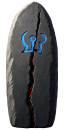

A 50-floor Descent, outdoor maps in Hell, and new pinnacle fights.
A free, offline mod for Diablo II: Resurrected with Reign of the Warlock.
What Legacy of the Horadrim adds
Latest news
Legacy of the Horadrim 0.3.0: sockets, quivers and the classes
A content update for the public alpha: socketed rings and amulets, Runebands, a unique for every quiver, new boss rewards, Gilded Fallen worth chasing and a second look at every class.
Legacy of the Horadrim 0.2.0: stats that reshape skillsA content update for the public alpha: Soul of Legend, new stats that change how skills behave, quivers that never run out, two Assassin sets, a rebuilt Last Vigil and reworked Descent floors.
Legacy of the Horadrim 0.1.0: the road beyond BaalThe first public alpha: new loot from Normal onward, then the Descent, 45 Sanctuary Stone maps, the Sentinel Vigil, Heaven and the Convergence after Baal.